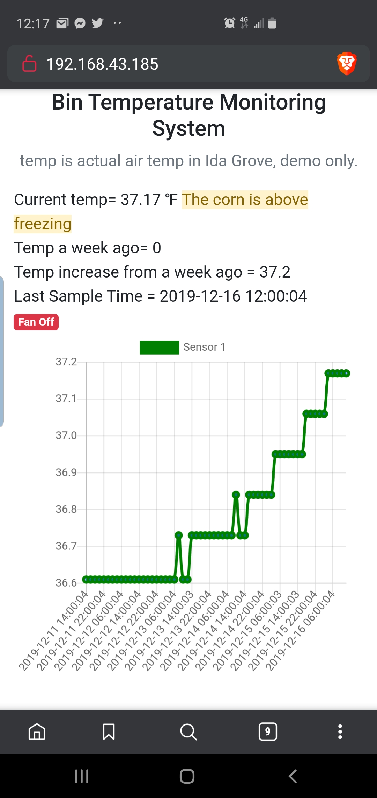
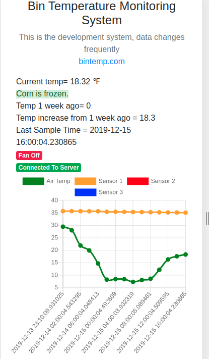
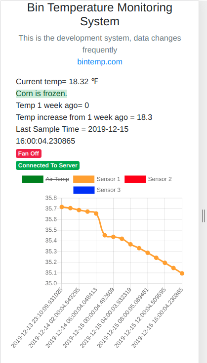

Ideally the system can plug right into your network or use your WIFI to connect to the internet. We can also use the cellular network for remote locations.
DIY system, simply zip tie the sensor cable to the bin and bury the sensor in few feet of grain in the top center of the bin. This is where the least amount of air flow is and will be the first place to notice grain going out of condition
We use IoT technology (Internet Of Things). That means you can put a sensor on pretty much anything imaginable. The sensors are battery powered or standard line voltage. The range is around one mile if you have line of sight; the signal will
go through buildings and trees but the range isn't as good.
The possibilites are endless with low cost, wireless, battery powered sensors that can last over a year without needing recharged or battery replaced. Want to track how warm the dog house, chicken house or well pump is? No problem. If you
want to track it we can do it, humidity, soil temp, soil moisture, pretty much anyting you can think of we can use IoT to make it happen.
Can be installed after the bin is filled and moved to different bins very easily
In larger bins you would install multiple sensors in the bin, but in most smaller bins one probe in the center will alert you to problems. The sensor is very accurate and can detect fractions of a degree and alert you to trends. For what a
single sensor system costs, this is very cheap insurance.
Text or email 712-830-8553
Demo Site
Grant Siebrecht
402 N State Rd
Lake View, IA 51450
$175 for a single sensor system.
This is a screenshot of my phone of a bin that rose alomost one degree in 5 days even though the weather has been below freezing.

This is a graph showing two sets of data

This graph is the same as the one to the left but with air temp hidden so you can ssee the sensor in finer detail.
